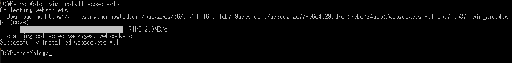
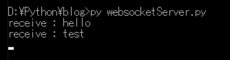
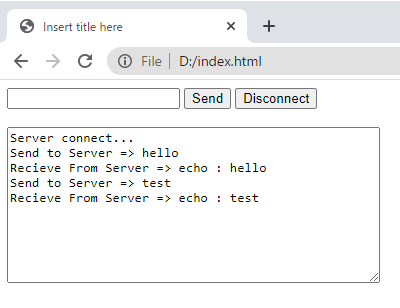
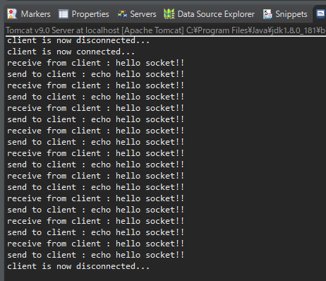

[Python] WebSocketを使う方法
こんにちは。明月です。
この投稿はPythonでWebSocketを使う方法に関する説明です。
WebSocketはウェブブラウザからJavascriptでTCP同期通信するためのプロトコルです。以前、JavaでWebSocketを実装したことがあるので、ご参考すれば理解しやすいと思います。
link - [Java] Servlet에서 사용하는 웹 소켓 (WebSocket)
WebSocketの場合は普通はWeb環境で実装します。でもPHPの場合はWebSocketを実装することができません。現在はそうです。後はどうか知りません。
でも、PHPの場合は言語特性のせいにThreadを直接に管理することが難しいので将来でもできないじゃないかと思います。
なのでその対策でnode.jsのsocket.ioとpythonのWebSocketがあります。
グーグルで検索するとPHPのWebSocketの対策でsocket.ioの説明が多いです。いつか機会があればnode.jsも説明したいですが、個人的にnode.jsを好きではありません。
node.jsの言語的に限界があることよりPythonの良いローカルスクリプトがあるのに、あえてなぜ？と認識があるのでです。
そしてsocket.ioは正確にwebsocket技術ではありません。AJAX Long Polling技術ということでhttpプロトコルでrequest＆response後に接続をすぐに切ることではなく、少しギャップをあげることです。
なので、データが変わる時にブラウザにとって再要求をするようにすることです。ユーザが感じるには、httpのプーリングで、まるで接続が接続を維持するような効果を出す方法です。
しかし、tcpで同期的に連結していることではないので、いろいろなバグが発生します。代表的なのが反応が遅い点がありますね。
なので私の場合はPythonのWebSocketの実装がいいではないかと思います。
PythonでWebSocketを使うためにライブラリをダウンロードしなければならないです。
pip install websockets

インストールが完了すればWebSocketスクリプトを作成しましょう。
import asyncio
# WebSocketモジュールを宣言する。
import websockets
# クライアント接続すると呼び出す。
async def accept(websocket, path):
# 無限ループ
while True:
# クライアントからメッセージを待機する。
data = await websocket.recv()
# コンソールに出力
print("receive : " + data)
# クライアントでechoを付けて再送信する。
await websocket.send("echo : " + data)
# WebSocketサーバー生成。ホストはlocalhost、portは9998に生成する。
start_server = websockets.serve(accept, "localhost", 9998)
# 非同期でサーバを待機する。
asyncio.get_event_loop().run_until_complete(start_server)
asyncio.get_event_loop().run_forever()
そしてクライアントはローカルの適当な場所にhtmlファイルで作成します。（pythonでWebサーバーを実装していないため、Webブラウザを実行すべきhtmlファイルが必要です。）
<!DOCTYPE html>
<html>
<head>
<meta http-equiv="Content-Type" content="text/html; charset=UTF-8">
<title>Insert title here</title>
</head>
<body>
<form>
<!-- サーバーにメッセージを送信するテキストボックス -->
<input id="textMessage" type="text">
<!-- 送信ボタン -->
<input onclick="sendMessage()" value="Send" type="button">
<!-- 接続終了ボタン -->
<input onclick="disconnect()" value="Disconnect" type="button">
</form>
<br />
<!-- 出力 area -->
<textarea id="messageTextArea" rows="10" cols="50"></textarea>
<script type="text/javascript">
// ウェブサーバを接続する。
var webSocket = new WebSocket("ws://localhost:9998");
// ウェブサーバから受信したデータを出力するオブジェクトを取得する。
var messageTextArea = document.getElementById("messageTextArea");
// ソケット接続すれば呼び出す関数。
webSocket.onopen = function(message){
messageTextArea.value += "Server connect...\n";
};
// ソケット接続が切ると呼び出す関数。
webSocket.onclose = function(message){
messageTextArea.value += "Server Disconnect...\n";
};
// ソケット通信中でエラーが発生すれば呼び出す関数。
webSocket.onerror = function(message){
messageTextArea.value += "error...\n";
};
// ソケットサーバからメッセージが受信すれば呼び出す関数。
webSocket.onmessage = function(message){
// 出力areaにメッセージを表示する。
messageTextArea.value += "Recieve From Server => "+message.data+"\n";
};
// サーバにメッセージを送信する関数。
function sendMessage(){
var message = document.getElementById("textMessage");
messageTextArea.value += "Send to Server => "+message.value+"\n";
// WebSocketでtextMessageのオブジェクトの値を送信する。
webSocket.send(message.value);
//textMessageオブジェクトの初期化
message.value = "";
}
// 通信を切断する。
function disconnect(){
webSocket.close();
}
</script>
</body>
</html>


ウェブブラウザでの上に作成したhtmlを実行すると、javascriptでpython websocketサーバに接続します。そしてhelloとtestのメッセージを送信すればserver側はhelloとtestのメッセージを受信してコンソールに出力します。後、echo：が付けてブラウザに送信します。ブラウザ側はecho:が付けているメッセージが表示されます。
ここまではpythonでのWebソケットを使用する際に問題ありません。
pythonでWebSocketのサーバーだけでなく、clientの立場でも、サーバー側のメッセージを送ることができます。
つまり、JavaでWebSocketサーバを実装するとPythonでテストアプリを実装することもできます。
import asyncio
# WebSocketモジュールを宣言する。
import websockets
async def connect():
# ウェブソケットに接続する。
async with websockets.connect("ws://localhost:8080/WebSocketExample/websocket") as websocket:
# 10回を繰り返してウェブソケットサーバにメッセージを送信する。
for i in range(1,10,1):
# メッセージを送信する。
await websocket.send("hello socket!!")
# WebSocketサーバからメッセージを受信すればコンソールに出力する。
data = await websocket.recv()
# コンソール出力
print(data)
# 非同期でサーバに接続する。
asyncio.get_event_loop().run_until_complete(connect())
import javax.websocket.OnClose;
import javax.websocket.OnError;
import javax.websocket.OnMessage;
import javax.websocket.OnOpen;
import javax.websocket.server.ServerEndpoint;
@ServerEndpoint("/websocket")
public class websocket {
// クライアント(ブラウザ)が接続すれば呼び出す関数。
@OnOpen
public void handleOpen() {
// コンソール出力
System.out.println("client is now connected...");
}
// クライアント(ブラウザ)からメッセージを受信すれば呼び出す関数。
@OnMessage
public String handleMessage(String message) {
// コンソール出力
System.out.println("receive from client : "+message);
// echoを付ける。
String replymessage = "echo " + message;
// コンソール出力
System.out.println("send to client : "+replymessage);
// クライアントに送信
return replymessage;
}
// クライアントと切断すれば呼び出す関数。
@OnClose
public void handleClose() {
// コンソール出力
System.out.println("client is now disconnected...");
}
// 通信中でエラーが発生すれば呼び出す関数。
@OnError
public void handleError(Throwable t) {
t.printStackTrace();
}
}


クライアント(python)からWeb Socket server(Java)に接続すればよくできます。
ここまでPythonでWebSocketを使う方法に関する説明でした。
ご不明なところや間違いところがあればコメントしてください。
- [Python] Apache cgiでPythonを使う方法2020/07/09 19:58:19
- [Python] Web serverを起動する方法(http.server)2020/07/09 00:13:13
- [Python] WebSocketを使う方法2020/07/07 17:29:18
- [Python] PythonとJavaのソケット通信する方法2020/07/03 18:35:50
- [Python] PythonとC#のソケット通信2020/07/01 19:28:22
- [Python] INI(環境設定ファイル)を扱う方法2020/06/30 18:26:01
- [Python] Jsonを扱う方法2020/06/29 19:18:15
- [Python] XMLファイルを扱う方法2020/06/26 19:18:14
- [Python] IOを利用してCSVファイルを扱う方法2020/06/25 18:20:30
- [Python] Apache cgiでPythonを使う方法2020/07/09 19:58:19
- [Python] Web serverを起動する方法(http.server)2020/07/09 00:13:13
- [Python] WebSocketを使う方法2020/07/07 17:29:18
- [Python] PythonとJavaのソケット通信する方法2020/07/03 18:35:50
- [Python] PythonとC#のソケット通信2020/07/01 19:28:22
- [Python] INI(環境設定ファイル)を扱う方法2020/06/30 18:26:01
- [Python] Jsonを扱う方法2020/06/29 19:18:15
- [Python] XMLファイルを扱う方法2020/06/26 19:18:14
- [Python] IOを利用してCSVファイルを扱う方法2020/06/25 18:20:30
- [Python] 21. データベース(mariaDB)を連結する方法2020/06/24 18:51:50
- [Python] 20. stringフォマード(Formatting)と補間法(interpolation)2020/06/23 19:03:21
- [Python] 19. 非同期IOのasync/await(asyncio)を使う方法2020/06/22 18:10:12
- [Python] 18. ネットワーク(Socket)通信する方法2020/06/18 19:53:56
- [Python] 17. スレッド(Thread)とロック(lock)、そしてデッドロック(deadlock)2020/06/18 00:19:45
- [Python] 16. IO(ファイル読み取り、書き込み)を扱う方法2020/06/16 18:37:00